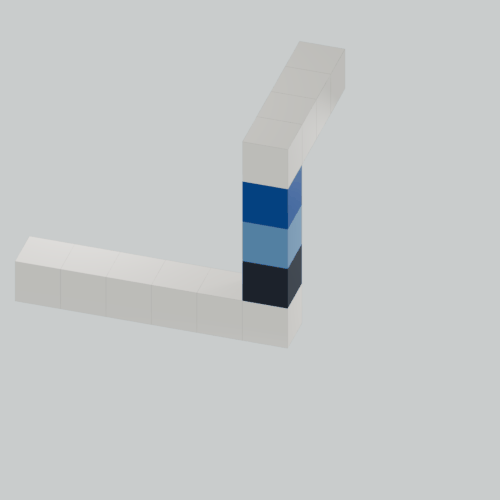
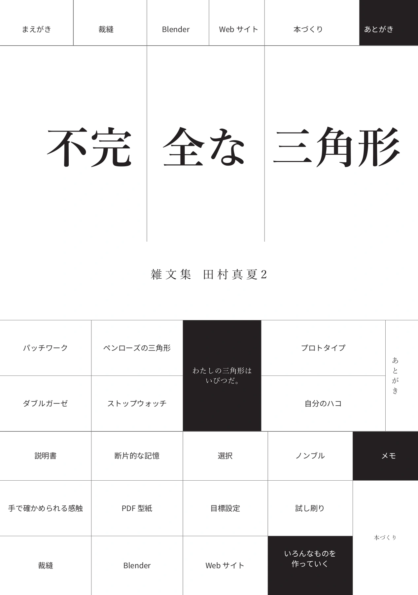
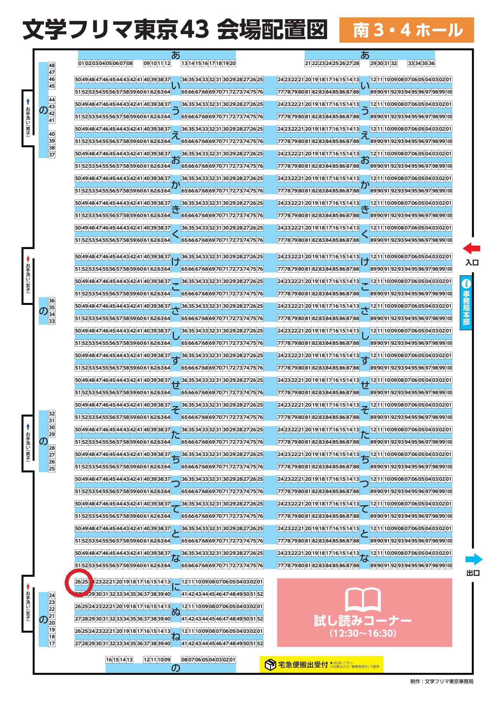

01裁縫
探す縫う測る切るほどく戻る試す選び直す針糸布ミシン手縫い型紙作り直す
雑文集 田村真夏2

だけど、ものをつくるのはとても楽しい。
わたしが毎日ものづくりを楽しむようになったのは、大人になってから。
子どものころのわたしは自分でものを作るのが苦手で、いろんな大人に矯正され、怒られ、ばかにされていた。
そこから抜け出して、自分で自分の好きなように作ることを知ってから、わたしはものづくりを楽しく感じるようになってきた。
失敗することも投げ出すことも多い。
だけど、ものをつくるのはとても楽しい。
「まえがき」より抜粋
デジタルも、アナログも、縫い物も、Web サイトも、CG も、本も作る。

| 書名 | 不完全な三角形―雑文集 田村真夏2 |
|---|---|
| 著者 | 田村真夏 |
| 判型 | B6判 |
| ページ数 | 本文122ページ |
| 価格 | 1,500円（紙・電子版共通） |
文学フリマ東京43は、2026年11月8日（日）12:00〜17:00、東京ビッグサイト 南1〜4ホールで開催されます。田村真夏のブースは南3・4ホール に-26です。
詳細はこちらもご覧ください→ 田村真夏の出店ページ（Webカタログ）／文学フリマ東京43の開催案内（公式）
| 📚 紙で買いたい！ |
→ 文学フリマでご購入いただくのがおすすめです！ 文学フリマでご購入いただくと、電子版PDFも無料でDLできる特典付き。オトクです！ |
|---|---|
| ✈️ その日東京行けないけど、紙で買いたい！ |
→ 後日、通販対応します。 BOOTHで販売する予定です。 またお知らせいたします！ |
| 📥 本棚に余裕ない。PDFで買いたい！ |
→ 後日、PDF有料版を販売します。 紙の本と同じ内容のPDF版を販売します。 |

一般入場には入場券が必要です。
| 前売券 | 1,000円 ※11月7日（土）23:59まで購入可 |
|---|---|
| 当日券 | スマチケ1,350円、会場窓口1,500円 |
18歳以下は入場無料・入場券不要。16:30以降はどなたも入場無料となるそうです。
詳細は下記をご覧ください！